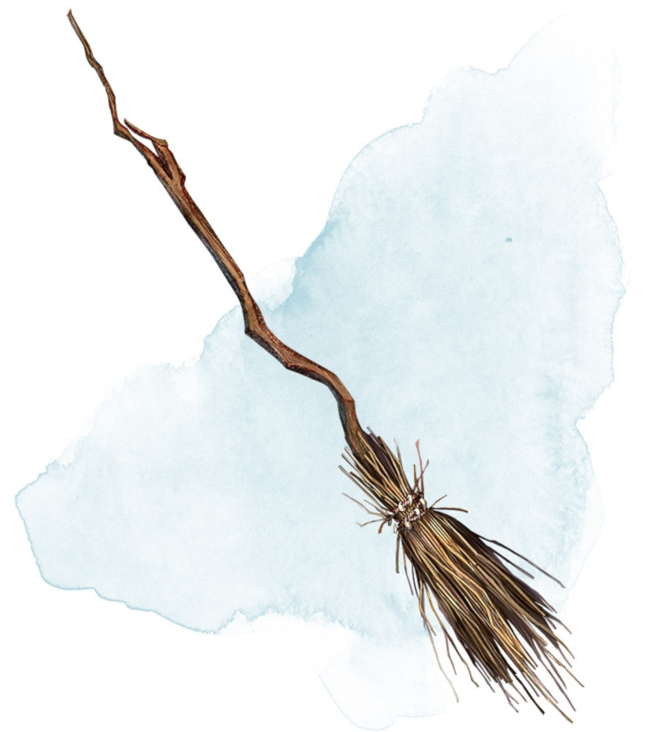

Broom of Flying
[ Balai volant ]
Wondrous item, uncommon
This wooden broom, which weighs 3 pounds, functions like a mundane broom until you stand astride it and speak its command word. It then hovers beneath you and can be ridden in the air. It has a flying speed of 50 feet. It can carry up to 400 pounds, but its flying speed becomes 30 feet while carrying over 200 pounds. The broom stops hovering when you land.
You can send the broom to travel alone to a destination within 1 mile of you if you speak the command word, name the location, and are familiar with that place. The broom comes back to you when you speak another command word, provided that the broom is still within 1 mile of you.
You can send the broom to travel alone to a destination within 1 mile of you if you speak the command word, name the location, and are familiar with that place. The broom comes back to you when you speak another command word, provided that the broom is still within 1 mile of you.
Dungeon Master´s Guide (SRD)
